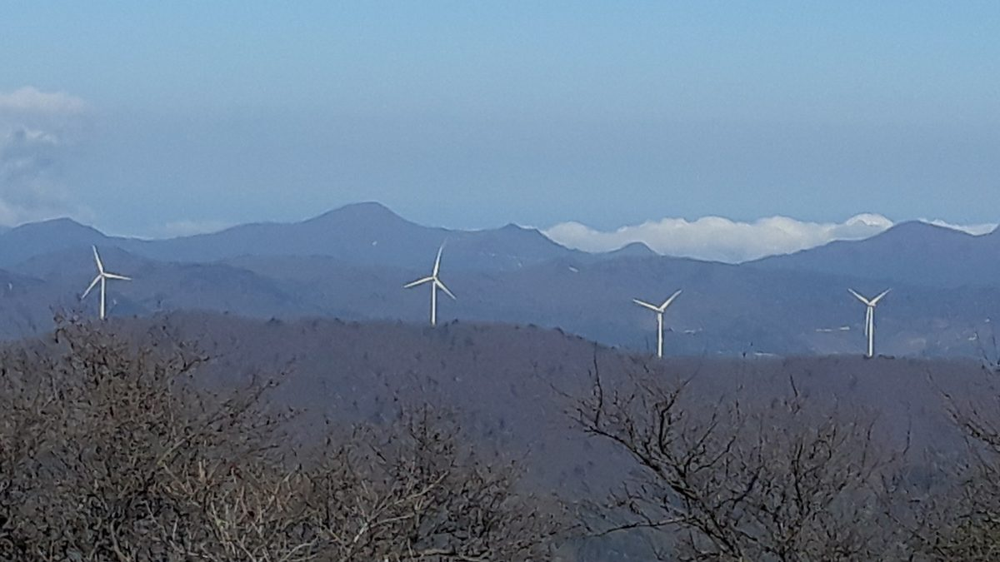

장흥군, 유치면 49MW 육상풍력 집적화단지 3차 민관협의회…지정 신청 앞두고 주민 참여·이익 공유 방안 논의

대천리 일원 풍력단지, 협의회 의견은 사업계획에 반영하고 기후에너지환경부 집적화단지 지정 절차 밟기로…구체적 이익 공유 비율은 아직 안 나와
전남광주통합특별시 장흥군이 유치면 대천리 일원에 추진하는 49MW 규모 육상풍력발전 집적화단지를 두고 지난 3일 군청에서 제3차 민관협의회를 열어 주민 참여와 발전 이익 공유 방안을 논의했다고 6일 밝혔다. 이번 협의회는 집적화단지 지정 신청을 앞두고 사업 방향을 정리하려고 마련됐으며, 참석자들은 주민 참여 확대와 이익 공유, 발전사업을 통한 지역경제 활성화와 주민 소득 증대 방안을 중점적으로 다뤘다. 협의회는 시설을 짓는 과정에서 주민 의견을 충분히 듣고, 발전사업의 경제적 성과가 실제로 주민에게 돌아가는 이익 공유 체계를 갖춰야 한다는 데 뜻을 모았다. 김현미 민관협의회 위원장은 사업의 성패가 "지역 주민의 적극적인 참여와 두터운 신뢰 형성에 달려 있다"고 말했다. 군은 이번에 모은 의견을 사업계획에 반영하고 기후에너지환경부의 육상풍력 집적화단지 지정을 위한 후속 절차를 밟을 계획이며, 주민이 얼마의 지분이나 수익을 갖게 될지는 아직 공개되지 않았다.
시민에너지 관점
덴마크는 2009년부터 2020년까지 새 풍력발전기를 세울 때 지분의 20% 이상을 반경 4.5km 안 주민에게 먼저 팔도록 법으로 정했고, 그 덕분에 풍력이 마을의 자산이라는 인식이 자리 잡았다. 풍력단지가 들어서면 소음과 경관 훼손만 남는다는 걱정은 주민이 계획 단계부터 지분과 의결권을 갖지 못할 때 커진다. 장흥군 민관협의회가 '이익 공유'를 넘어 주민이 협동조합으로 직접 발전소의 일부를 소유하는 길을 열어야 지역에 돈과 신뢰가 함께 남는다. 군은 집적화단지 지정 신청 전에 주민 지분 비율과 참여 방식을 숫자로 공개하고 주민 설명회에서 확정해야 한다.
출처: 매일일보 2026-11-06 김금옥 원문 보기
長興郡、有治面49MW陸上風力集積化団地の第3回官民協議会…指定申請を前に住民参加と利益共有を議論
大川里一帯の風力団地、協議会の意見は事業計画に反映し気候エネルギー環境部の集積化団地指定手続きへ…具体的な利益共有の比率はまだ示されず
韓国の全南光州統合特別市長興（チャンフン）郡は、有治面大川里一帯で進める49MW規模の陸上風力発電集積化団地をめぐり、3日に郡庁で第3回官民協議会を開き、住民参加と発電利益の共有策を話し合ったと6日明らかにした。協議会は集積化団地の指定申請を前に事業の方向性を整理するために設けられ、出席者は住民参加の拡大と利益共有、発電事業による地域経済の活性化と住民所得の向上を重点的に議論した。協議会は、施設を建設する過程で住民の意見を十分に聞き、発電事業の経済的成果が実際に住民に戻る利益共有の仕組みを整えるべきだという点で一致した。キム・ヒョンミ官民協議会委員長は、事業の成否は「地域住民の積極的な参加と厚い信頼の形成にかかっている」と述べた。郡は今回集めた意見を事業計画に反映し、気候エネルギー環境部による陸上風力集積化団地の指定に向けた後続手続きを進める計画で、住民がどれだけの持ち分や収益を得るかはまだ公表されていない。
市民エネルギーの視点
デンマークは2009年から2020年まで、新しい風車を建てる際に持ち分の20%以上を半径4.5km以内の住民に優先して売るよう法律で定め、風力は村の資産だという認識が根付いた。風力団地ができれば騒音と景観の毀損だけが残るという懸念は、住民が計画段階から持ち分と議決権を持てないときに大きくなる。長興郡の官民協議会が「利益共有」を超え、住民が協同組合を通じて発電所の一部を直接所有する道を開いてこそ、地域にお金と信頼がともに残る。郡は集積化団地の指定申請の前に、住民の持ち分比率と参加方式を数字で公開し、住民説明会で確定すべきだ。
出典: 毎日日報（Maeil Ilbo） 2026-11-06 キム・グムオク 原文を読む
长兴郡就有治面49MW陆上风电集中开发园区召开第三次官民协议会…申请指定前讨论居民参与和收益共享方案
大川里一带风电园区，协议会意见将反映到项目计划中，并推进气候能源环境部集中开发园区指定程序…具体收益共享比例尚未公布
韩国全南光州统合特别市长兴郡6日表示，已于3日在郡厅召开第三次官民协议会，围绕在有治面大川里一带推进的49MW规模陆上风电集中开发园区，讨论居民参与和发电收益共享方案。此次协议会是在申请园区指定之前为梳理项目方向而召开的，与会者重点讨论了扩大居民参与、收益共享，以及通过发电项目振兴地方经济、增加居民收入的方案。协议会一致认为，在建设设施的过程中应充分听取居民意见，并建立让发电项目的经济成果真正回到居民手中的收益共享机制。官民协议会委员长金贤美表示，项目成败"取决于当地居民的积极参与和深厚信任的建立"。郡方计划将此次收集的意见反映到项目计划中，并推进气候能源环境部指定陆上风电集中开发园区的后续程序，居民将获得多少股份或收益目前尚未公布。
市民能源视角
丹麦在2009年至2020年间以法律规定，新建风机时须将至少20%的股份优先出售给半径4.5公里内的居民，风电是村庄资产的观念由此扎根。所谓风电园区建成后只留下噪音和景观破坏的担忧，往往在居民从规划阶段起就没有股份和表决权时变得更大。长兴郡官民协议会只有超越"收益共享"，为居民通过合作社直接拥有部分电站开辟道路，资金和信任才能一同留在当地。郡方应在申请园区指定之前，以具体数字公开居民持股比例和参与方式，并在居民说明会上加以确定。
来源: 每日日报（Maeil Ilbo） 2026-11-06 金今玉（音译） 查看原文
Jangheung County holds third public-private council on 49 MW onshore wind cluster in Yuchi-myeon, discusses resident participation and profit sharing ahead of designation bid
Council input on the Daecheon-ri wind cluster will go into the project plan as the county pursues designation by the Ministry of Climate, Energy and Environment; no specific profit-sharing ratio yet
Jangheung County in South Korea's Jeonnam-Gwangju Integrated Special City said on the 6th that it held a third public-private council meeting at the county office on the 3rd to discuss resident participation and the sharing of power profits for a 49 MW onshore wind cluster planned around Daecheon-ri in Yuchi-myeon. The meeting was convened to set the project's direction before the county applies for cluster designation, and participants focused on expanding resident participation, sharing profits, and using the project to boost the local economy and raise residents' incomes. The council agreed that residents' views must be fully heard while the turbines are built and that a profit-sharing system is needed so the project's economic gains actually return to residents. Council chair Kim Hyun-mi said the project's success "depends on the active participation of local residents and the building of deep trust." The county plans to reflect the input in its project plan and to pursue follow-up steps toward designation of the onshore wind cluster by the Ministry of Climate, Energy and Environment; how large a stake or share of revenue residents will receive has not yet been disclosed.
Citizen Energy View
From 2009 to 2020, Denmark required by law that at least 20% of the shares in any new wind turbine be offered first to residents living within 4.5 km, and that rule helped make wind power a village asset. Fears that a wind cluster leaves only noise and spoiled views behind grow when residents have no stake or vote from the planning stage. Only if Jangheung's council goes beyond "profit sharing" and opens a path for residents to own part of the plant directly through a cooperative will both money and trust stay in the area. Before applying for designation, the county should publish the residents' ownership share and participation method in concrete numbers and settle them at a public briefing.
Source: Maeil Ilbo 2026-11-06 Kim Geum-ok Read the original